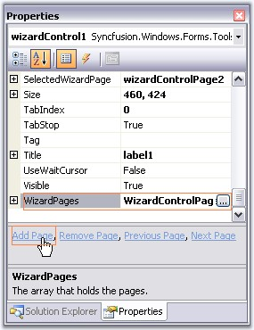
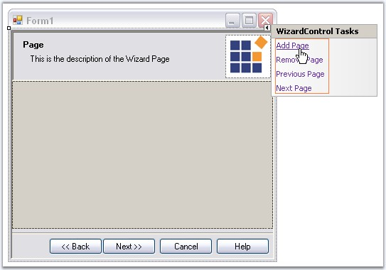
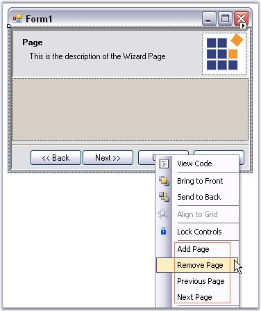
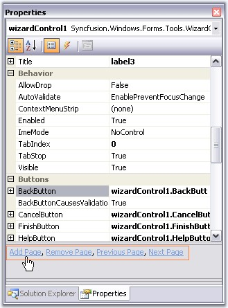
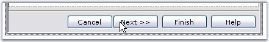
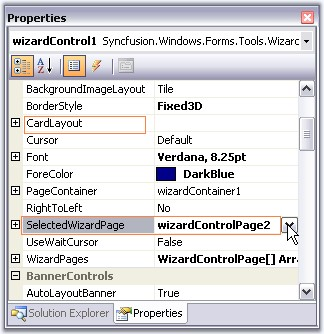

The below topics are discussed in this particular section.
This section will guide you with various options available in the designer to add page, remove page, go to previous page and next page.
Using Property Grid

Figure 1226: Adding Page Using "WizardPages" Property and "Add Page" Command
Using Smart Tag

Figure 1227: Pages Options Using Smart Tag
Using Context menu

Figure 1228: Pages Options by using Context Menu
Property Grid Commands

Figure 1229: Page Options using Properties Grid Command
This section will guide you with page selection options at design time.
· We can easily navigate between the Wizard pages using the Next and Back buttons in the designer. These buttons are selectable at design time.

Figure 1230: Going to Next Page in the Designer
· Another way to navigate is to access the Next Page or Previous Page option in the context menu or Smart Tag of the Wizard control.
See Options to Add Page, Remove Page, Previous page and Next Page topic, to see the Next page and Previous page options in smart tag and context menu.
· You can also do the page selection using SelectedWizardPage or CardLayout property.

Figure 1231: Selecting Wizard Page Through SelectedWizardPage Property
See Also